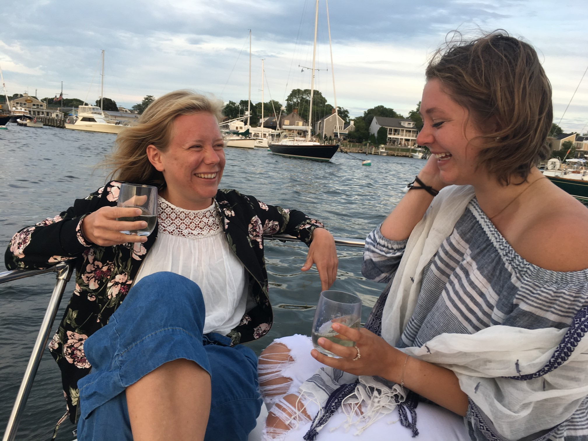
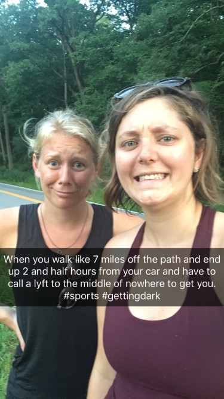
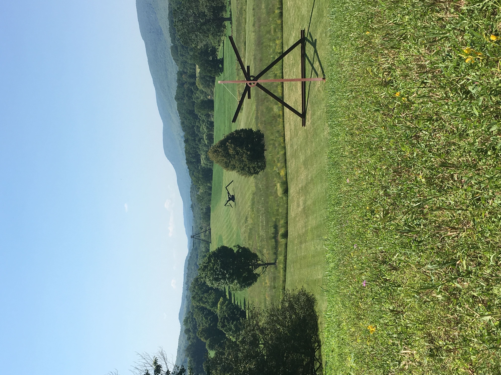
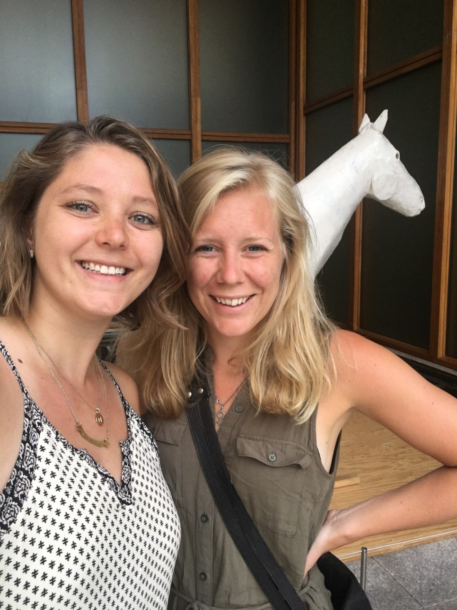
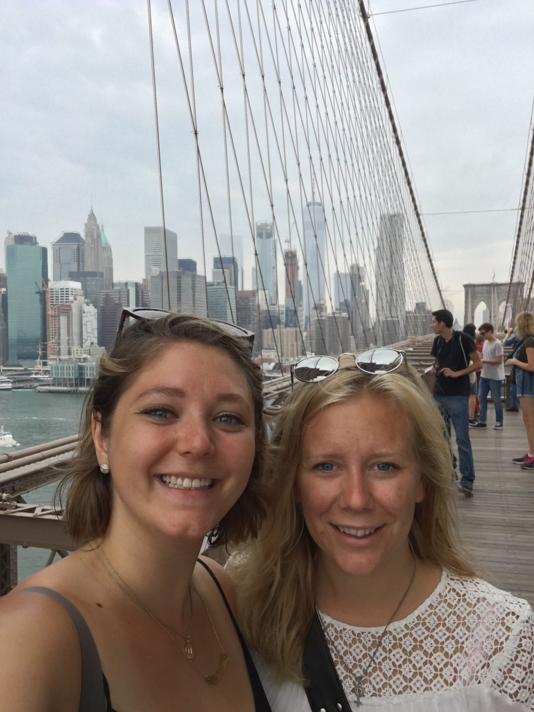

The purpose of this article is to describe Inessa and Nora's friendship and adventures.
Inessa & Nora
Inessa and I met when in second grade at Lomond School in Shaker Heights, Ohio. Inessa was tiny and blonde and was still new to the United States - she and her parents moved from Lund, Sweden the year prior so her parents could work at the Cleveland Clinic. Inessa and I became fast friends - we played soccer, read and obsessed over Harry Potter, made crafts, and laughed all the time.
After fourth grade, Inessa and her parents moved back to Sweden, though we knew we'd stay friends. Since then, we've hardly gone two years without seeing each other. She spent a summer with me in Shaker Heights and I spent a summer with her in Lund. We've traveled all over together, here are some of our adventures:
- Paris, France
- New York City, New York (to watch Inessa run the Marathon!)
- Boston, Massachusetts
- Copenhagen, Denmark
- Lund, Sweden (several times)
- Columbus, Ohio (Inessa spent a week in my dorm at The Ohio State University)
- And most importantly, our 2010 backpacking trip where we visited:
- Amsterdam, Netherlands
- Brugge, Belgium
- Castelnaudary, France
- Marseilles, France
- Barcelona, Spain
- Florence, Italy
- Rimini, Italy
- Innsbruck, Austria
- Salzburg, Austria
- Budapest, Hungary
- Vienna, Austria
- Munich, Germany
- Berlin, Germany
- ...and so many more places!
19th Friendaversary Trip
This past August, we both had some time off and decided to take a trip through New England. We started at her great uncle's house in Stonington, Connecticut, then to Stony Brook, New York, to Philadelphia, Pennsylvania, and finally to New York City. Here are some of the pictures from our trip:

Here we are on her great uncle's boat in Stonington, Connecticut.

We got very lost on our hike in Stony Brook, New York and had quite an adventure.

One of the best parts of the trip was visiting Storm King Art Center in New York.

In Philadelphia, we visited the Barnes Foundation art museum.

On our last day in New York, we walked across the Brooklyn Bridge and got matching tattoos in Brooklkyn!
Until our next trip...